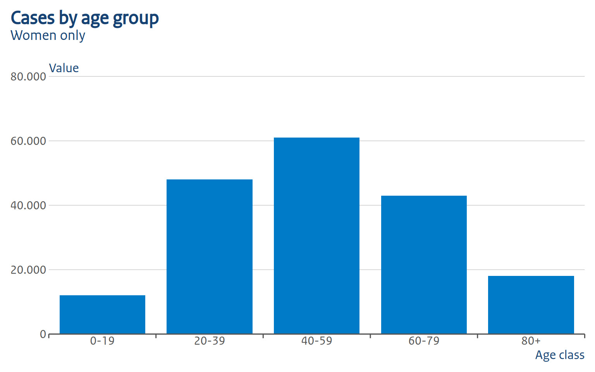
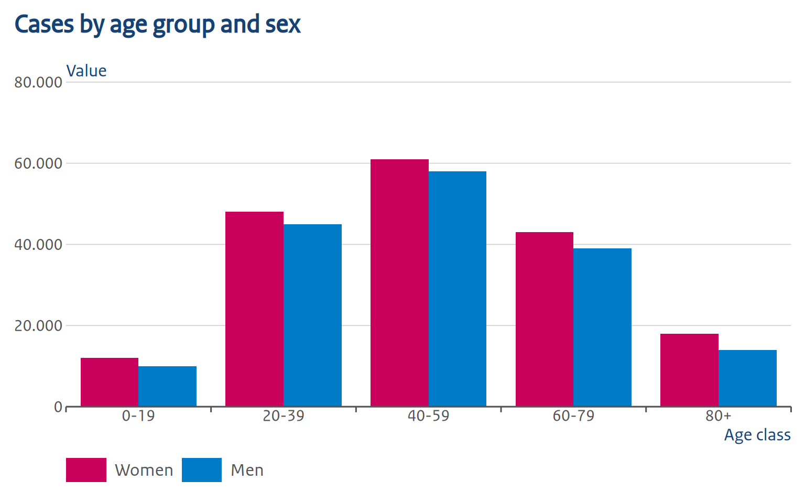
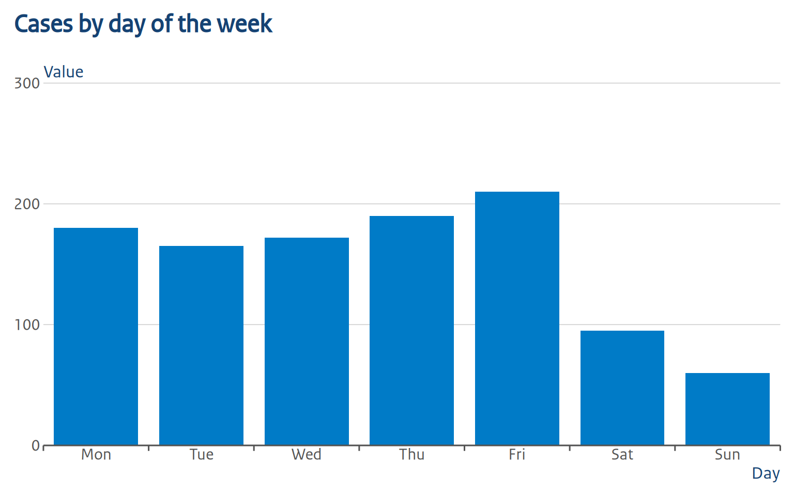
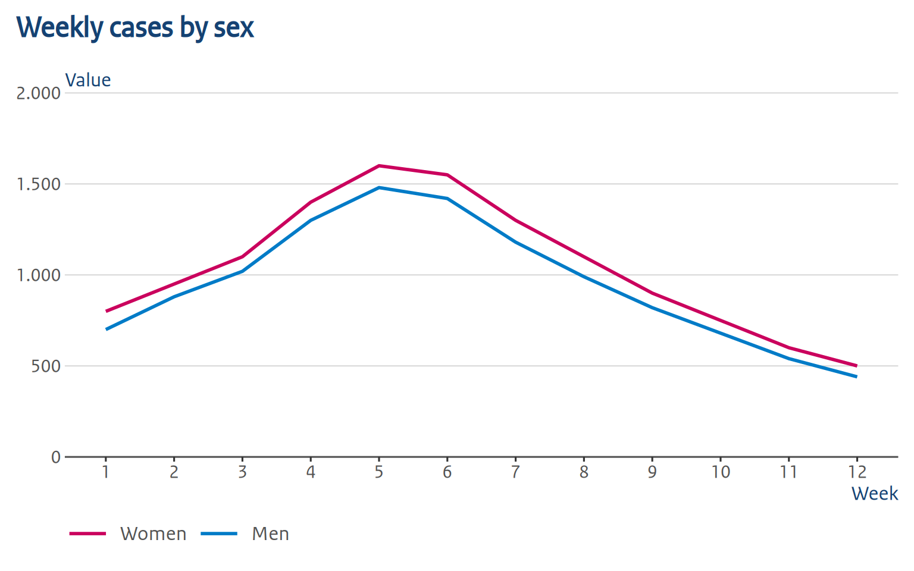
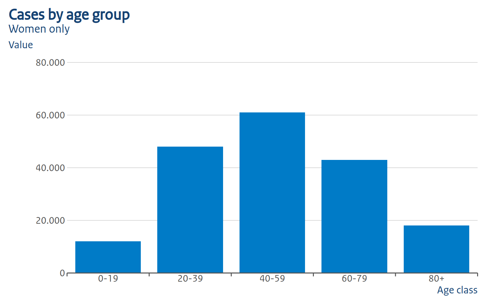
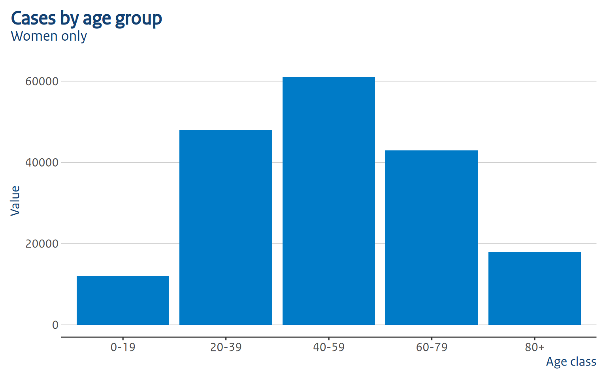

library(ggplot2)
library(dplyr)
library(ROvis.utils) # nolint: missing_package_linter.
library(ROvis.ggplot2) # nolint: missing_package_linter.This vignette walks you through the steps to create a static graph with ggplot2 according to a fixed set of rules/guidelines. This vignette uses the RIVM guidelines as a basis. In future releases of ROvis, we aim to allow adding other guidelines from other Rijksoverheid organisations as well.
Important
In this vignette, the examples specifically follow the style guidelines of the National Institue for Public Health and the Envrionment (RIVM).
Setup
We use a small synthetic dataset for demonstration purposes:
sex_levels <- c("Women", "Men", "Total")
# Reported cases per age group and sex
dat_cases <- data.frame(
agegroup = rep(c("0-19", "20-39", "40-59", "60-79", "80+"), times = 3),
sex = factor(rep(sex_levels, each = 5), levels = sex_levels),
n = c(
12000,
48000,
61000,
43000,
18000,
10000,
45000,
58000,
39000,
14000,
22000,
93000,
119000,
82000,
32000
)
)
# Reported cases per week (three series)
dat_weekly <- data.frame(
week = factor(rep(1:12, times = 3), levels = 1:12),
sex = factor(rep(sex_levels, each = 12), levels = sex_levels),
n = c(
800,
950,
1100,
1400,
1600,
1550,
1300,
1100,
900,
750,
600,
500,
700,
880,
1020,
1300,
1480,
1420,
1180,
990,
820,
680,
540,
440,
1500,
1830,
2120,
2700,
3080,
2970,
2480,
2090,
1720,
1430,
1140,
940
)
)
# Reported cases per day of the week
dat_weekday <- data.frame(
day = factor(
c("Mon", "Tue", "Wed", "Thu", "Fri", "Sat", "Sun"),
levels = c("Mon", "Tue", "Wed", "Thu", "Fri", "Sat", "Sun")
),
n = c(180, 165, 172, 190, 210, 95, 60)
)Apply the RO theme
ro_gg_plot is designed to be a complete add-on for your ggplot2 graphs. It’s more than a theme. It applies a lower-level theme (ro_gg_theme), and makes adjustments on top of that.
Unlike ro_gg_theme(), which returns a theme() object you add with + anywhere in the chain, ro_gg_plot() needs to see the whole plot (its data, geoms, and scales) to decide what to add. So it takes a complete ggplot2 object as input and returns a modified one. Build your plot fully first, save it to an object, and call ro_gg_plot() on that object as the very last step:
p_basic <- dat_cases |>
filter(sex == "Women") |>
ggplot(aes(x = agegroup, y = n)) +
geom_col(fill = ro_color("hemelblauw")) +
labs(
title = "Cases by age group",
subtitle = "Women only",
x = "Age class",
y = "Value"
)
ro_gg_plot(p_basic)Keep in mind that when using ro_gg_theme, you need to take additional coding steps to fully comply
with the RIVM style. For more information, see the ROvis documentation website:
https://rivm-syso.github.io/ROvis
This message is displayed once per session.
A note on piping: you cannot pipe straight out of a + chain into ro_gg_plot(), because |> binds tighter than +. Writing
ggplot(...) +
geom_col() +
labs(...) |>
ro_gg_plot()only applies ro_gg_plot() to the result of labs(...), not to the whole plot (and will error, since that’s not a ggplot object). Always assign the finished plot to a variable first!
Chart types
Column chart (grouped)
p_grouped <- dat_cases |>
filter(sex != "Total") |>
ggplot(aes(x = agegroup, y = n, fill = sex)) +
geom_col(position = "dodge") +
scale_fill_manual(
values = c(Women = ro_color("robijnrood"), Men = ro_color("hemelblauw"))
) +
labs(
title = "Cases by age group and sex",
x = "Age class",
y = "Value",
fill = "Sex"
)
ro_gg_plot(p_grouped)
Notice that we set fill = "Sex" in labs(), but no legend title is shown: RO style never displays one, so ro_gg_plot() removes it automatically.
ro_gg_plot() also fixes up the bar/column styling to match RO style: each group of bars occupies 80% of its category slot (the remaining 20% is the gap between groups), bars within a group sit flush against each other with no gap, and bars get no outline. The x-axis ticks are moved from under each category to the boundary between groups — that’s the small tick marks you can see between “0-19”/“20-39”/“40-59” above, instead of one centered under each category.
Column chart with a discrete axis
Any discrete x-axis works the same:
p_weekday <- dat_weekday |>
ggplot(aes(x = day, y = n)) +
geom_col(fill = ro_color("hemelblauw")) +
labs(
title = "Cases by day of the week",
x = "Day",
y = "Value"
)
ro_gg_plot(p_weekday)
The group ticks sit at the boundary between each day, same as for the age-group chart above.
Horizontal bar chart
For a horizontal bar chart, swap x and y in aes() and set flip = TRUE:
Line chart
p_line <- dat_weekly |>
filter(sex != "Total") |>
ggplot(aes(x = week, y = n, color = sex, group = sex)) +
geom_line(linewidth = 1) +
scale_color_manual(
values = c(Women = ro_color("robijnrood"), Men = ro_color("hemelblauw"))
) +
labs(
title = "Weekly cases by sex",
x = "Week",
y = "Value",
color = "Sex"
)
ro_gg_plot(p_line)
ro_gg_plot() detects that this is not a bar/column chart, so it leaves ggplot2’s default axis expansion and limits alone (a line chart usually shouldn’t touch the x-axis the way a bar chart does): it only adds the thousands separator to the y-axis labels and still removes the legend title and relocates the y-axis title.
Color palettes
ro_gg_plot() does not choose colors for you. You can use ROvis.utils::ro_color() or ROvis.utils::ro_color_palette() in your scale_fill_manual()/scale_color_manual() calls, exactly as you would without it:
{r palettes, fig.height=3} # ROvis.utils::ro_show_colors("categorical") # ROvis.utils::ro_show_colors("gender_con") #
Making further changes after ro_gg_plot()
ro_gg_plot() returns a normal ggplot2 object, so you can keep adding to it with +. Things like colors, text sizes, legend position, labs(), coord_*(), and so on behave exactly as they would on any other plot, because later theme()/labs() calls simply override the earlier ones.
ro_gg_plot(p_basic) +
theme(plot.title = element_text(size = 16, face = "bold", color = "red"))So, making changes on top, or overriding them completely, is no problem. However, there are some things to take into account, which we will discuss below.
The y-axis title position is baked in, not a theme element
ro_gg_y_title() (called internally) blanks out the normal axis.title.y and replaces it with a text grob (text graphical object). A text grob is just a piece of text drawn at a specific position. In this case, that is at a specific y-coordinate, namely the height of the top gridline at the moment ro_gg_plot() was called. Because of this, theme(axis.title.y = ...) calls added afterward have no effect, because there’s no axis title left to style, only that positioned grob.
Most of the time it works wonderful, but in some cases it might not. If the default position doesn’t work for your plot, set auto_set_y_title = FALSE to disable the text grob completely. ro_gg_plot() then still applies the cosmetic theme, legend cleanup, and axis changes, but leaves the y-axis title as a normal, styleable axis.title.y element:
ro_gg_plot(p_basic, auto_set_y_title = FALSE) +
theme(axis.title.y = element_text(angle = 0, vjust = 1.05, hjust = 0))
Adding layers that change the data range
Axis limits keep adjusting to new layers, because ro_gg_plot() sets limits = ro_gg_axis, a function ggplot2 re-evaluates against the full data range at draw time. Adding a geom_hline(), another geom_col(), etc. after ro_gg_plot() correctly widens the axis.
The y-axis title will not follow, though: it’s the fixed coordinate described above, computed once from the top gridline at call time. If a later layer pushes the top gridline higher, the title ends up positioned too low. This is why we recommend to call ro_gg_plot() last, after all layers, scales, and labels have been added. If you do need to add data afterward, it’s best to use auto_set_y_title = FALSE within ro_gg_plot().
The same principle applies to legend titles: ro_gg_plot() blanks the legend title only for aes or layers that are present when it’s called. A scale_*() or layer added afterwards, introduces a new legend. This legend will keep the default title, since the removal step has already run. Normally this shouldn’t be an issue though. As, again, we advise to call ro_gg_plot() last, after all layers, scales, and labels have been added.
Known limitations
ro_gg_plot() aims to automate as much as possible to avoid many manual adjustments. A few things are still manual:
-
Bar styling and tick-mark placement are fixed values. The 80%/20% group/gap split, zero padding within a group, and the tick marks’ color, width, and length are not user-configurable through
ro_gg_plot(). If you need different values, applyro_gg_group_ticks()and thegeom_col()/geom_bar()parameters yourself instead. - Facets. Only the first panel is used to position the y-axis title and the group ticks; multi-panel plots aren’t specifically handled yet.
-
Scale detection relies on ggplot2 internals (
plot$scales$scales) that aren’t part of the stable, exported API, so this could break in a futureggplot2release.
If you’ve already added your own scale_y_continuous()/scale_x_continuous() for the continuous axis, ro_gg_plot() leaves it untouched rather than overriding it.
Using the lower-level theme function
It is possible to use the lower-level ro_gg_theme as a standalone theme. This does not give you the “full” set of changes, but it gives you a bit more flexibility in what you would like to add (as far as ro_gg_plot doesn’t allow you already):
p_basic <- dat_cases |>
filter(sex == "Women") |>
ggplot(aes(x = agegroup, y = n)) +
geom_col(fill = ro_color("hemelblauw")) +
labs(
title = "Cases by age group",
subtitle = "Women only",
x = "Age class",
y = "Value"
) +
ro_gg_theme()
p_basic
As you can see, this is pretty bare bones. Typography and colors are applied, but you miss things like thousand separators, axis label positioning, tick mark positioning and bar placement. That why we recommend using ro_gg_plot instead: this fixes all those shortcomings.
Save your figure
Use ro_gg_save() to save your figure for offline publication:
ro_gg_save("p_grouped.png", ro_gg_plot(p_grouped))